[Intro.]
1.1 Convolutions · 1.2 Finite differences · 1.3 Derivative of Gaussian · 2.1 Sharpening · 2.2 Hybrid images · 2.3 Stacks · 2.4 Blending · What I learned
Part 1.1: Convolutions from Scratch
[4-loop vs 2-loop, filter flip, zero padding, same vs full, runtimes vs scipy, how the borders are handled.]
def getBox(k):
# kxk box filter, each entry is 1/k^2
box_filter = np.ones((k, k)) / (k * k)
return box_filter
def convolve4(img, kernel, mode="same"):
# flip the kernel as required
kernel = kernel[::-1, ::-1]
kh, kw = kernel.shape
height, width = img.shape
output_height = height + kh - 1
output_width = width + kw - 1
output = np.zeros((output_height, output_width))
# pad kh - 1 and kw - 1 zeros on every side
img = np.pad(img, ((kh - 1, kh - 1), (kw - 1, kw - 1)), mode="constant", constant_values=0)
for i in range(output_height):
for j in range(output_width):
for ki in range(kh):
for kj in range(kw):
output[i, j] += img[i + ki, j + kj] * kernel[ki, kj]
if mode == "full":
return output
top = (kh - 1) // 2
left = (kw - 1) // 2
return output[top:top + height, left:left + width]
def convolve2(img, kernel, mode="same"):
kernel = kernel[::-1, ::-1]
kh, kw = kernel.shape
height, width = img.shape
output_height = height + kh - 1
output_width = width + kw - 1
output = np.zeros((output_height, output_width))
img = np.pad(img, ((kh - 1, kh - 1), (kw - 1, kw - 1)), mode="constant", constant_values=0)
for i in range(output_height):
for j in range(output_width):
window = img[i:i + kh, j:j + kw]
output[i, j] = np.sum(window * kernel)
if mode == "full":
return output
top = (kh - 1) // 2
left = (kw - 1) // 2
return output[top:top + height, left:left + width]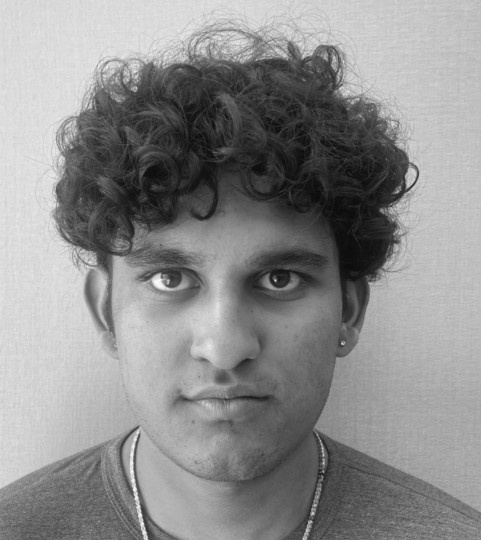
9×9 box filter
Partial derivative in x

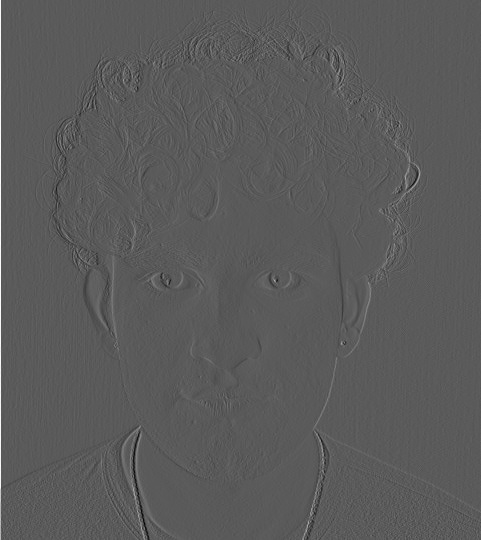

Partial derivative in y
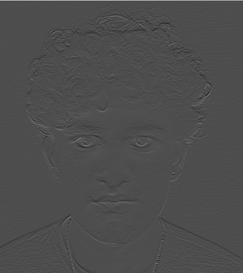


Part 1.2: Finite Difference Operator

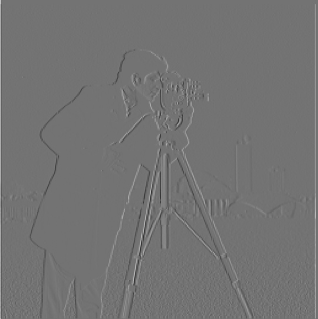


Binarized edges


[Why t = 0.30. The other thresholds are the row above.]
Part 1.3: Derivative of Gaussian (DoG) Filter
[Gaussian is 13×13, σ = 2. Compare with the finite-difference edges. DoG vs blur-then-derivative: max abs difference about 1e-15, and the t = 0.08 edges differ in 0 pixels.]
ksize = 13
G = cv2.getGaussianKernel(ksize=ksize, sigma=2)
G = G @ G.T
# full mode so the derivative filter is not cropped
Gdx_kernel = scipy.signal.convolve2d(G, Dx, mode="full")
Gdy_kernel = scipy.signal.convolve2d(G, Dy, mode="full")Blur, then finite differences
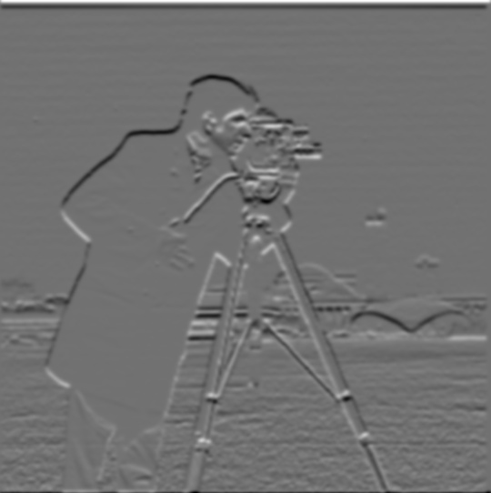


Derivative-of-Gaussian filters
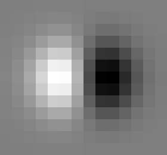
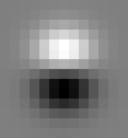
One convolution with the DoG filters


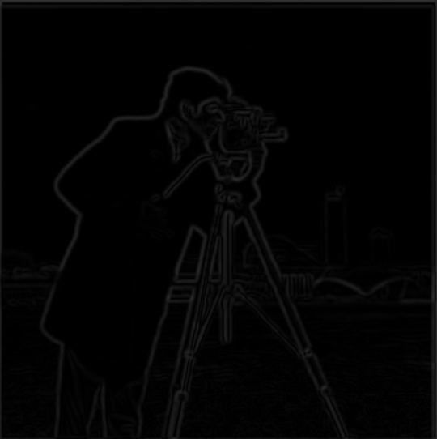
Part 2.1: Image Sharpening
[How unsharp masking uses the blur and the high frequencies. What a = 1, 2, 3, 5 does on the Taj and the crocodile. What happens after blurring tung and sharpening it back.]
# f + a (f - f ∗ G) = f ∗ [(1 + a) · unit - a · G]
unit = np.zeros_like(G)
unit[6][6] = 1
unsharp_mask = lambda a: (1 + a) * unit - a * GTaj Mahal


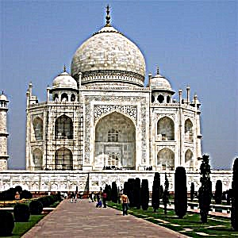
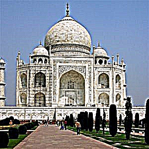
Crocodile
Blur a sharp image, then sharpen it
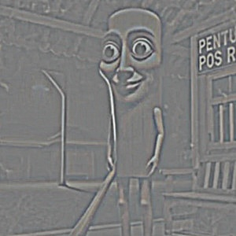
Part 2.2: Hybrid Images
[Which image is low frequency vs high frequency, what you see up close vs far away, and why those sigmas. Derek σ = 12 / Nutmeg σ = 4, potato σ = 14 / cake σ = 4, lion σ = 12 / tiger σ = 3.]
def gaussian(s):
ksize = 2 * int(np.ceil(3 * s)) + 1
G1D = cv2.getGaussianKernel(ksize=ksize, sigma=s)
return G1D @ G1D.T
def laplacian(s):
G = gaussian(s)
unit = np.zeros_like(G)
unit[G.shape[0] // 2][G.shape[1] // 2] = 1
return unit - G
low_part = conv_color(low, gaussian(low_s))
high_part = conv_color(high, laplacian(high_s))
hybrid = np.clip(low_part + high_part, 0, 1)Derek and Nutmeg


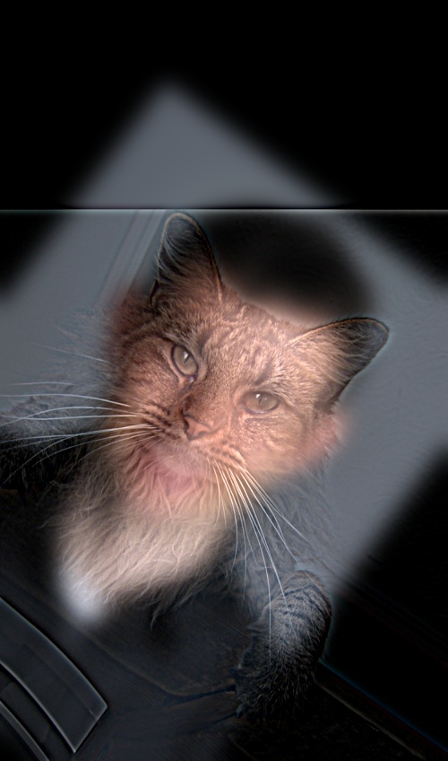
Frequency analysis (Derek + Nutmeg)
[Walk through the aligned pair, the two filters, and the log-magnitude FFTs. These are the grayscale copies. The color hybrid is above.]
Spatial
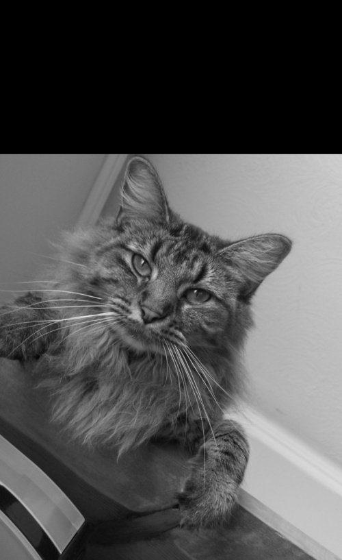
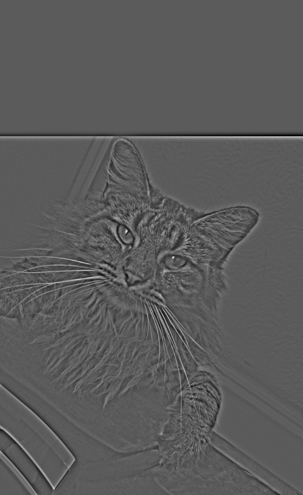
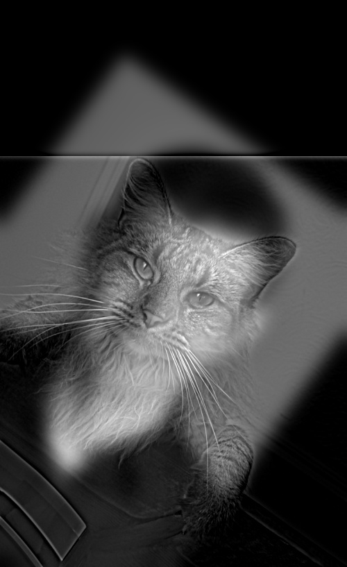
Fourier
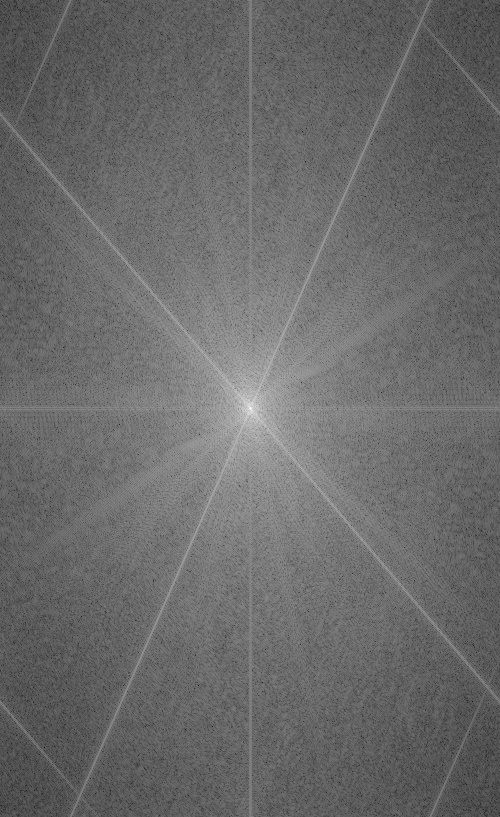
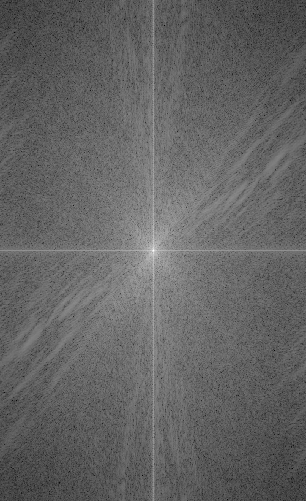
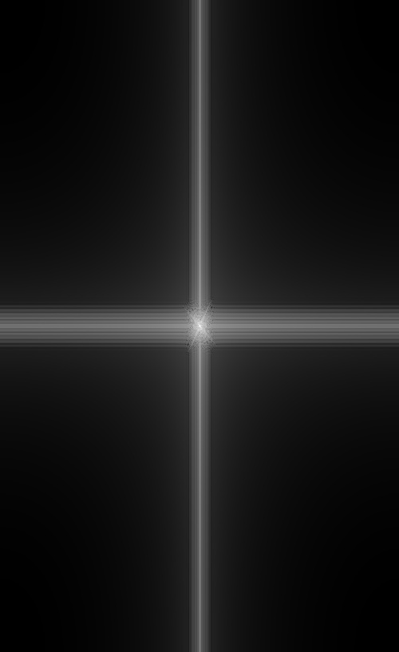
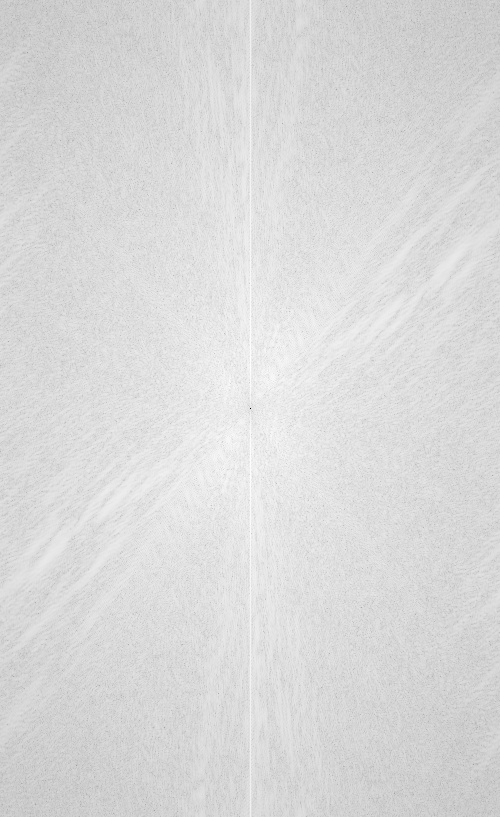
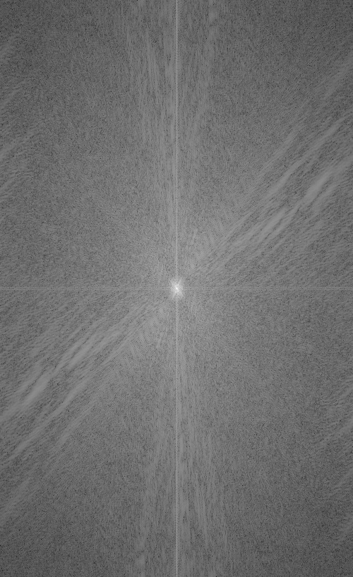
Potato and cake
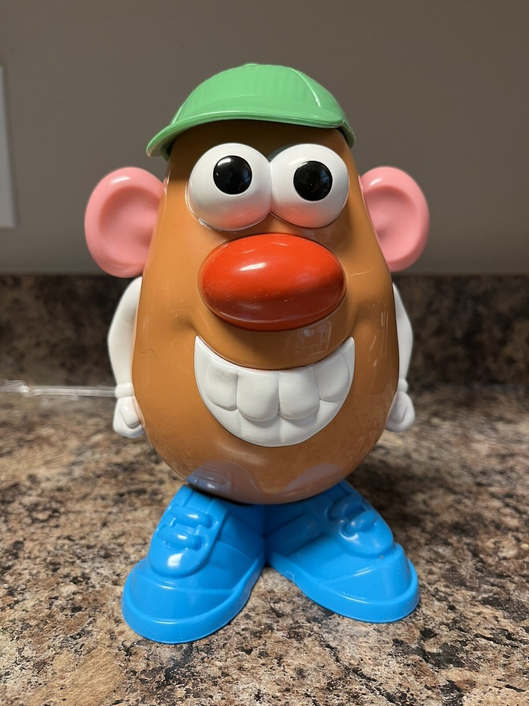
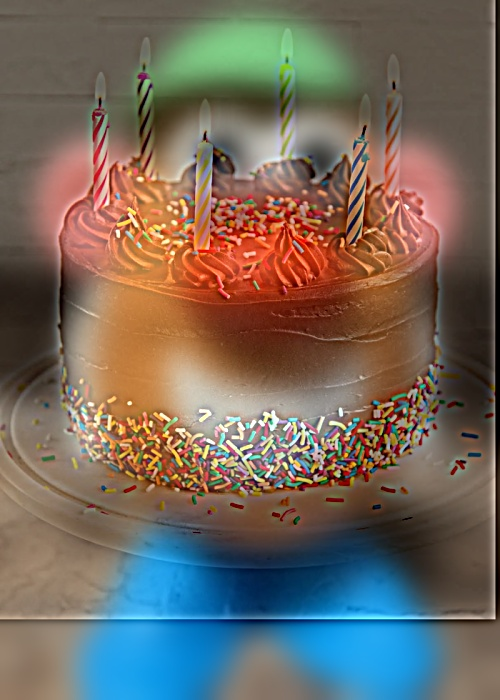
Lion and tiger
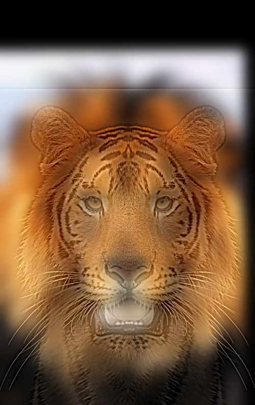
Part 2.3: Gaussian and Laplacian Stacks
[Stack vs pyramid. No downsampling. Level 0 is the image, then σ = 1, 2, 4, 8, 16, 32. Laplacian level i is Gaussian i minus the next one. The last level is the leftover blur.]
def get_gaussian_stack(img, n):
# G0 = img, Gi = img blurred with sigma 2 ** (i - 1)
stack = [img]
for i in range(1, n):
stack.append(conv_color(img, gaussian(2 ** (i - 1))))
return stack
def get_laplacian_stack(img, n):
g_stack = get_gaussian_stack(img, n)
stack = []
for i in range(n - 1):
stack.append(g_stack[i] - g_stack[i + 1])
stack.append(g_stack[-1])
return stackApple, Gaussian stack

Apple, Laplacian stack
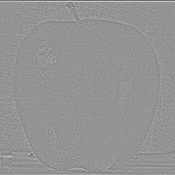
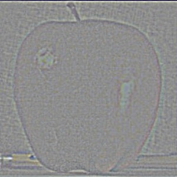
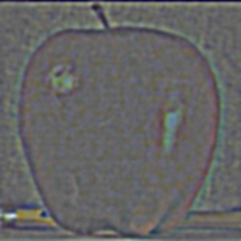
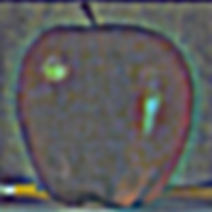
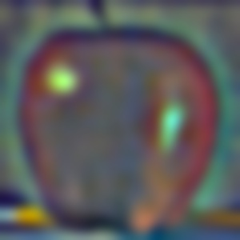
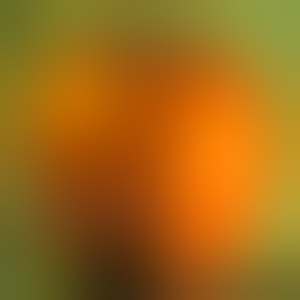
Orange, Gaussian stack

Orange, Laplacian stack
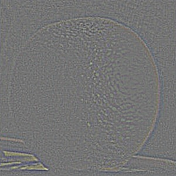
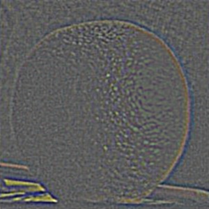
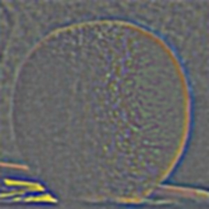
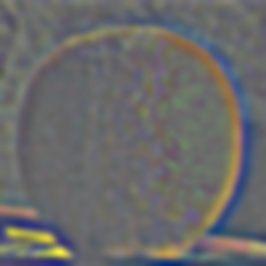
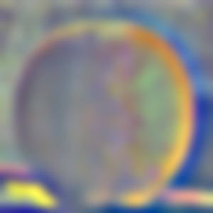
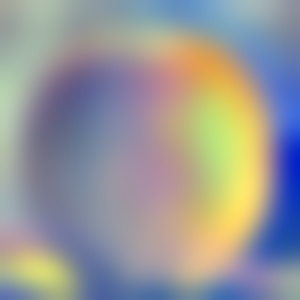
Part 2.4: Multiresolution Blending
[Why a hard seam stays if you blend at one scale, and why blurring the mask at each level hides it. Oraple is a vertical half. Street mask keeps the light trails. Face mask keeps the hair and nose.]
a_lap = get_laplacian_stack(a, n)
b_lap = get_laplacian_stack(b, n)
m_stack = get_gaussian_stack(mask, n)
a_levels = [m * l for m, l in zip(m_stack, a_lap)]
b_levels = [(1 - m) * l for m, l in zip(m_stack, b_lap)]
blend = [x + y for x, y in zip(a_levels, b_levels)]Oraple
Figure 3.42, panels (a) through (l)
[Same layout as Szeliski figure 3.42. Columns: masked apple, masked orange, blend. Rows: Laplacian levels 0, 2, 4, then the sum. Zero is mid-gray on the first three rows.]
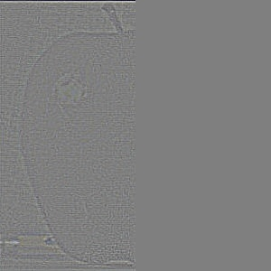
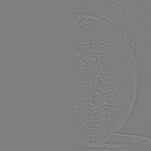
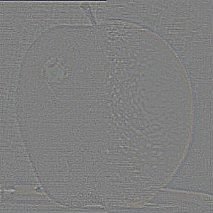
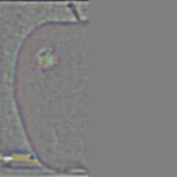
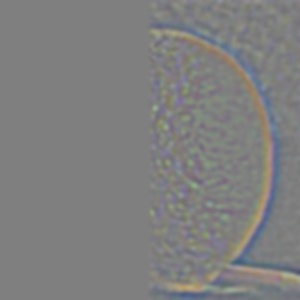
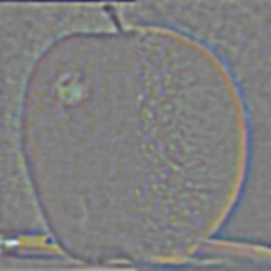
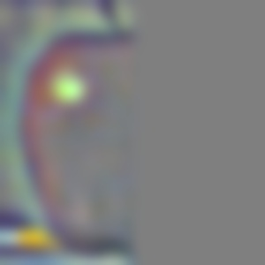
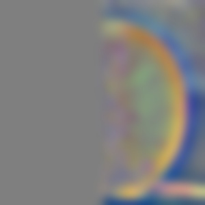
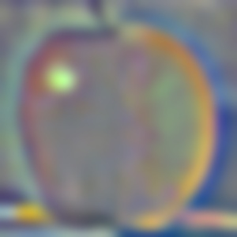
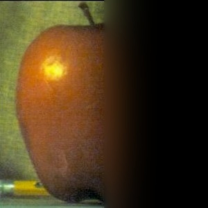
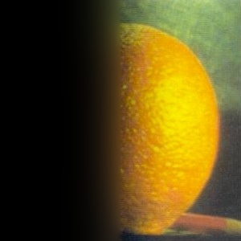
Day and night
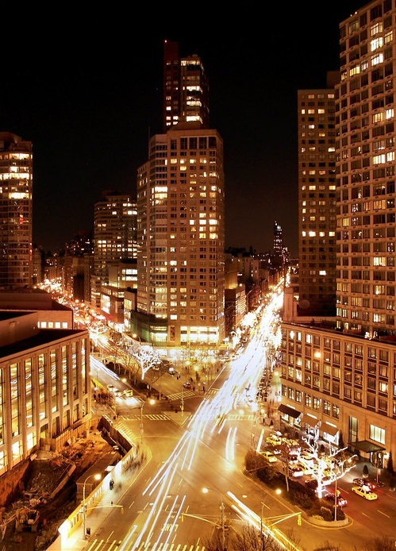
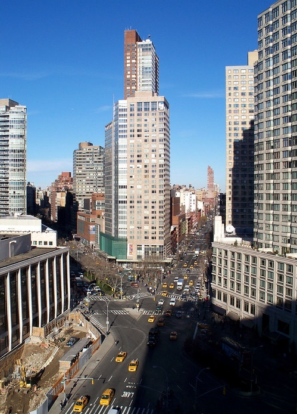
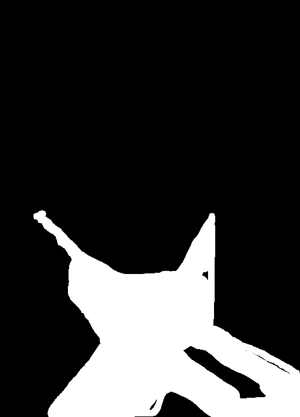

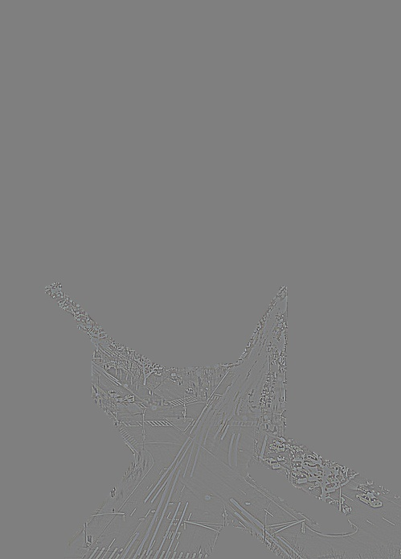
Two portraits
What I Learned
[Most important thing you learned.]